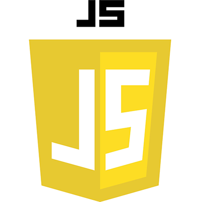

Techologies


Enthusiastic and motivated student eager for new cahllenges looking to dive into the world of development. Passionate person who wants to learn new skills and improve existing ones. I would make up lack of experience with hard work and great dedication. As a person I am very open, positive and communicative. I love to joke and laugh, but also I am direct, organized and abstract thinking person who loves problem solving. Through smaller projects I have shown to function well both in a team as well as an individual. I am quite versatile person with a lot of interests. Your academy looks like a great opportunity for me and my further development.

High School DiplomaTechnical School Zagreb
2013.
- 2017.
Bachelor's DegreeFaculty of Organization and
Informatics
2017. - 2020.

Master's DegreeFaculty of Organization and
Informatics
2020. - ongoing
Histroy - I have a great passion for history and I love spending time exploring various battles, events and different periods. Acquired knowledge gives a great perspective on many things and expands the ability to connect different concepts. That combined with cause-and-effect relationships tracking, one can truly answer many how and why questions of the modern world.

Automotive Industry - I always had interest in cars and vehicles in general. I own a car and i love working on it, and I find driving a car very enjoyable. There is something special about 1.5 tons of carbon fiber/steel/aluminum gliding through corners, as you shift through gears smoothly and accelerate fast while the engine screams.. or it is just me

Technology - Passionate about technology in general, especially in areas of artificial intelligence (AI), computer hardware, 3d printers and 3d modeling and blockchain technology. I was always found of trying and exploring different software programs. Modern day ability to automate tasks, both small like running some small code with a script, to a large robot-only facotires is just fascinating.
Like what you see? Wanna colab? Contact me.
Check up my social for additional info.